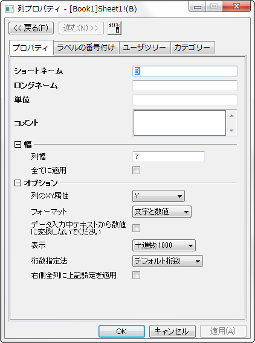

「列プロパティ」ダイアログボックス
ColProperties-Dialog
列プロパティダイアログボックスで、指定した列の属性を設定することができます。
- 
ダイアログを開く
下記のいずれかの方法でダイアログボックスを開きます。
- ワークシート列のショートネームヘッダをダブルクリックします。
または
- ワークシート列を選択し、フォーマット：列フォーマット を選択します。
または
- ワークシート列を選択し、右クリックして列フォーマットを選択します。
戻る/進むボタン
ダイアログ上部にある戻るおよび進むボタンを使って、列の選択を右方向または左方向に1つずつ移動することができます。これにより、このダイアログボックスを閉じたり、開いたりすることなく、同一ワークシートの別の列の属性を編集することができます。
ダイアログタブ
列プロパティダイアログボックスには、3つのタブがあります。
- プロパティタブでは、特定の列に対するロングネーム、ショートネーム、列幅、表示フォーマットなどの基本的なプロパティを編集できます。詳細はプロパティタブのヘルプをご覧ください。
- ラベルの番号付けタブでは、現在の列の右側にある全列に対してショートネーム、ロングネーム、単位、コメントを適用するときんび使用します。詳細はラベルの番号付けタブをご覧ください。
- ユーザツリータブは、列に関連した情報を保持するのに使用します。さらに、いくつかのサードパーティ製のファイルをワークブックにインポートすると、ファイルから抽出された情報がこのユーザーツリーにも保存されます。詳細はユーザーツリーをご覧ください。
- 列プロパティダイアログのカテゴリタブは、特定の列のカテゴリのプロパティを編集できます。詳細は、カテゴリタブをご覧ください。